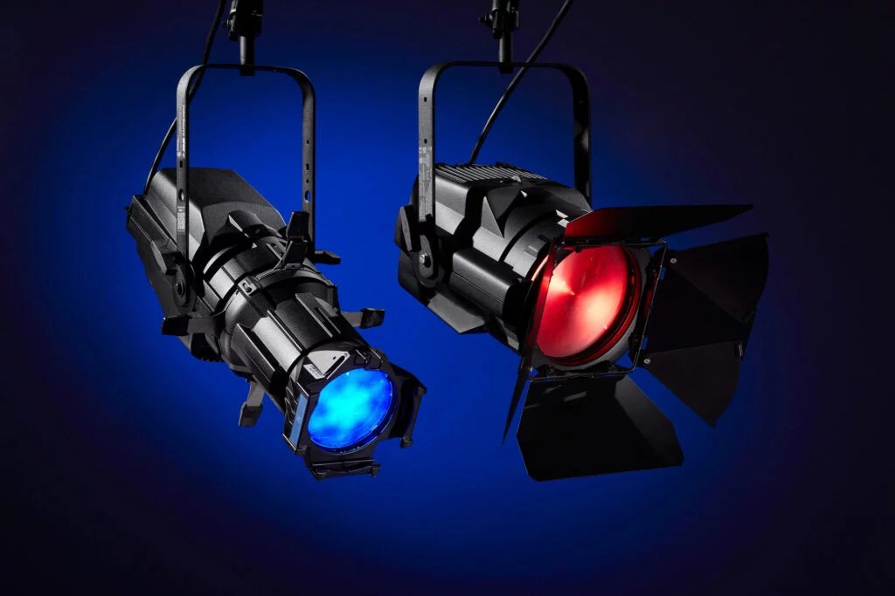
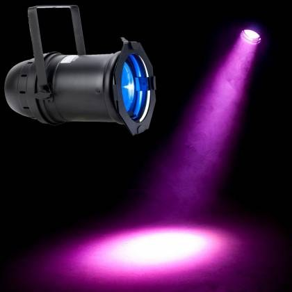
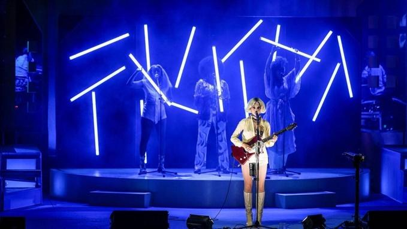
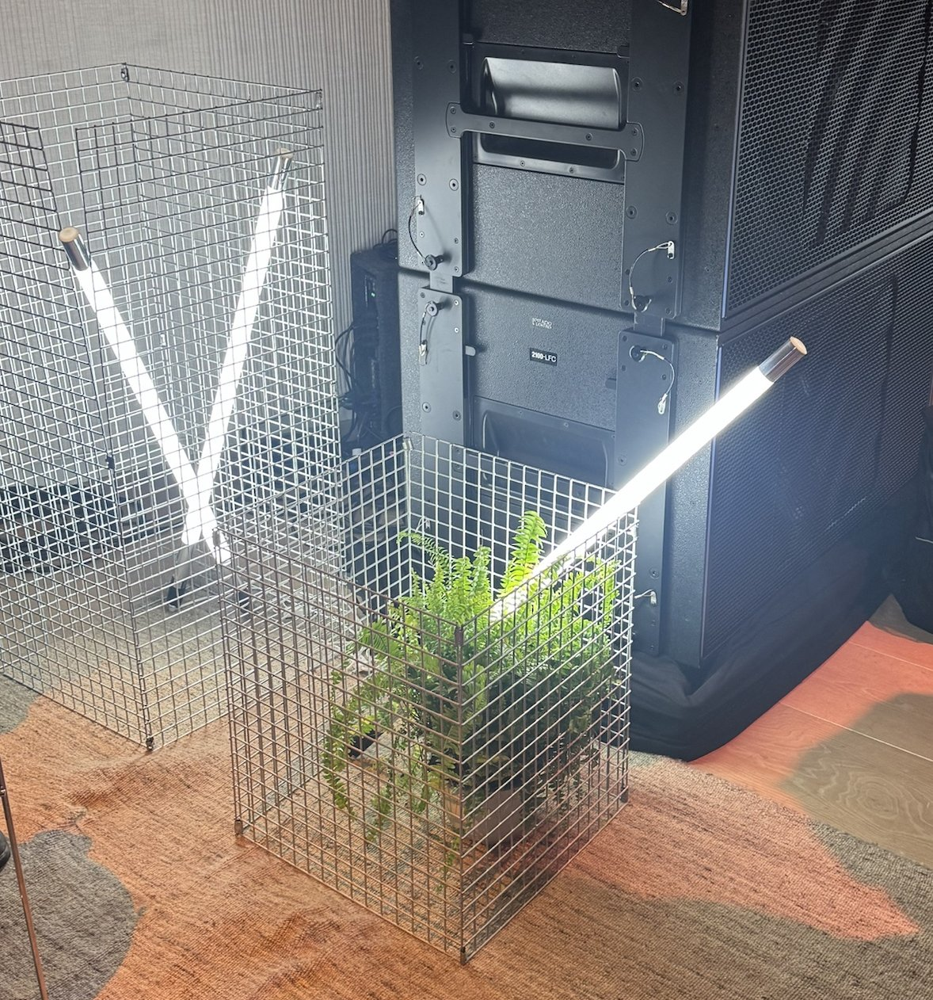
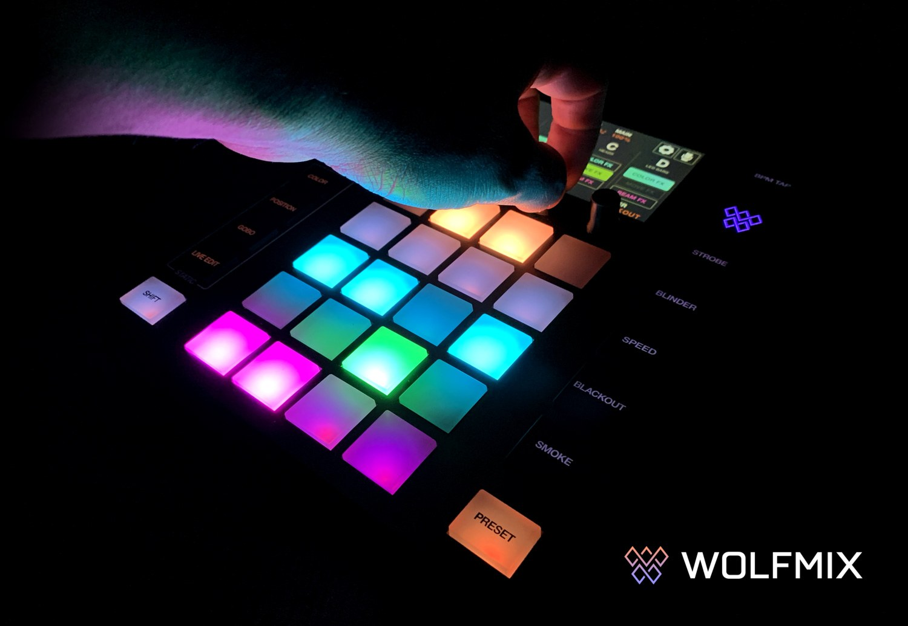
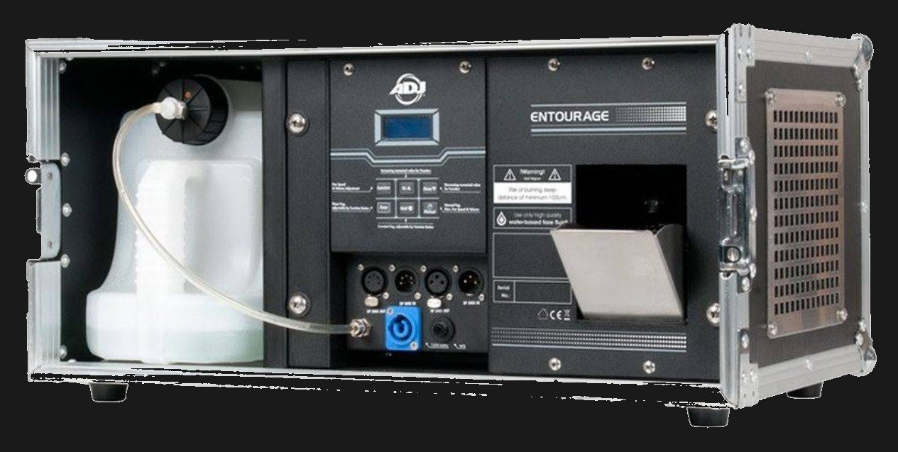
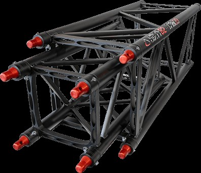

Sfeerlicht voor presentaties en events: multi-inzetbaar, full-colour en veelal draadloos
We ontwerpen een lichtplan en sturen daarvoor een offerte. Deze is gebaseerd op ofwel een locatiebezoek of foto’s, het type event en het doel, de fysieke ruimte en het budget. Afhankelijk van de locatie en de gekozen materialen is mogelijk een trussconstructie onderdeel van het advies.






